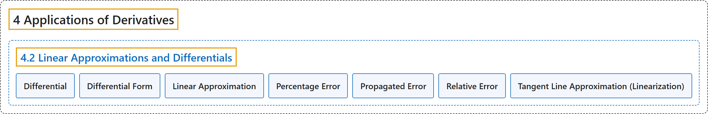

4.2 Linear Approximations and Differentials
Classification

Glossary
| Term | Definition | 中文翻译 | Source |
|---|---|---|---|
| 4 Applications of Derivatives 导数的应用 |
(No definition) | （无定义） | Strang & Herman, 2016a, chapter 4 |
| 4.2 Linear Approximations and Differentials 线性近似与微分 |
(No definition) | （无定义） | Strang & Herman, 2016a, section 4.2 |
| Differential 微分 |
"the differential \(dx\) is an independent variable that can be assigned any nonzero real number; the differential \(dy\) is defined to be \(dy=f'(x)dx\)" | 微分 \(dx\) 是一个自变量，可以取任意非零实数；微分 \(dy\) 定义为 \(dy=f'(x)dx\) | Strang & Herman, 2016a, chapter 4 Key Terms |
| Differential Form 微分形式 |
"given a differentiable function \(y=f'(x),\) the equation \(dy=f'(x)dx\) is the differential form of the derivative of \(y\) with respect to \(x\)" | 给定可导函数 \(y=f'(x),\) 方程 \(dy=f'(x)dx\) 是 \(y\) 关于 \(x\) 的导数的微分形式 | Strang & Herman, 2016a, chapter 4 Key Terms |
| Linear Approximation 线性近似 |
"the linear function \(L(x)=f(a)+f'(a)(x-a)\) is the linear approximation of \(f\) at \(x=a\)" | 线性函数 \(L(x)=f(a)+f'(a)(x-a)\) 是 \(f\) 在 \(x=a\) 处的线性近似 | Strang & Herman, 2016a, chapter 4 Key Terms |
| Percentage Error 百分比误差 |
"the relative error expressed as a percentage" | 用百分数表示的相对误差 | Strang & Herman, 2016a, chapter 4 Key Terms |
| Propagated Error 传播误差 |
"the error that results in a calculated quantity \(f(x)\) resulting from a measurement error dx" | 计算出的量 \(f(x)\) 中由测量误差 dx 引起的误差 | Strang & Herman, 2016a, chapter 4 Key Terms |
| Relative Error 相对误差 |
"given an absolute error \(\Delta q\) for a particular quantity, \(\frac{\Delta q}{q}\) is the relative error." | 给定某个量的绝对误差 \(\Delta q\)，\(\frac{\Delta q}{q}\) 是相对误差。 | Strang & Herman, 2016a, chapter 4 Key Terms |
| Tangent Line Approximation (Linearization) 切线近似（线性化） |
"since the linear approximation of \(f\) at \(x=a\) is defined using the equation of the tangent line, the linear approximation of \(f\) at \(x=a\) is also known as the tangent line approximation to \(f\) at \(x=a\)" | 由于 \(f\) 在 \(x=a\) 处的线性近似是用切线方程定义的，\(f\) 在 \(x=a\) 处的线性近似也称为 \(f\) 在 \(x=a\) 处的切线近似 | Strang & Herman, 2016a, chapter 4 Key Terms |
References
Strang, G., & Herman, E. (2016a). Calculus volume 1. OpenStax. Retrieved October 29, 2026, from https://openstax.org/details/books/calculus-volume-1